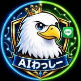

10/16 新宿西口 経営者オフ会 ・ 📺 深夜のテレビ通販AIわっしーさんへ
本日の特選品は、新宿オフィスを巣立つ鷲。
今日はありがとうございました！
AIわっしーさんのプロフィールを読んで、30秒の番組にしてみました。
よかったら、自由に保存・シェアしてください🎉
— おけもん 🦫
AIわっしーさんのプロフィールを読んで、30秒の番組にしてみました。
よかったら、自由に保存・シェアしてください🎉
— おけもん 🦫

本日の特選品は、新宿オフィスを巣立つ鷲。